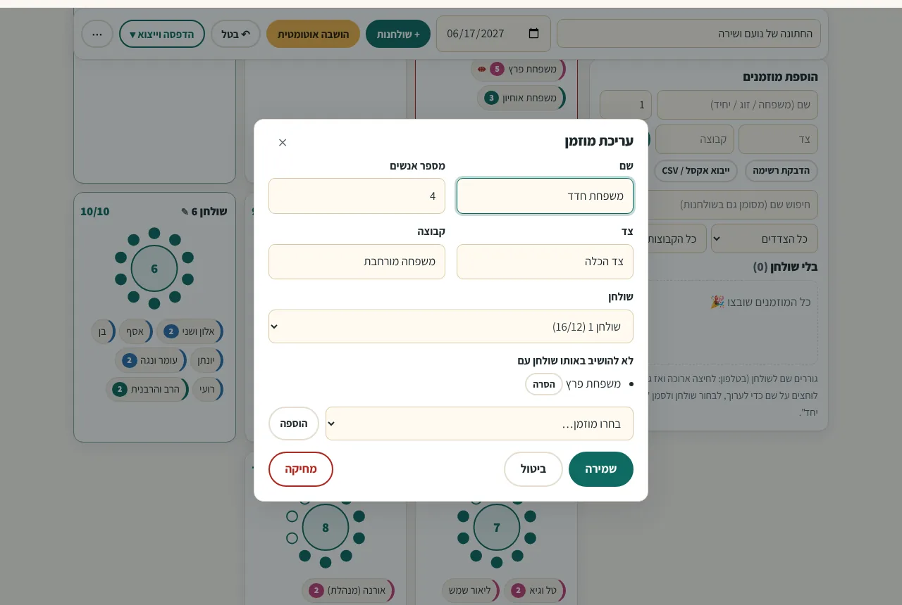
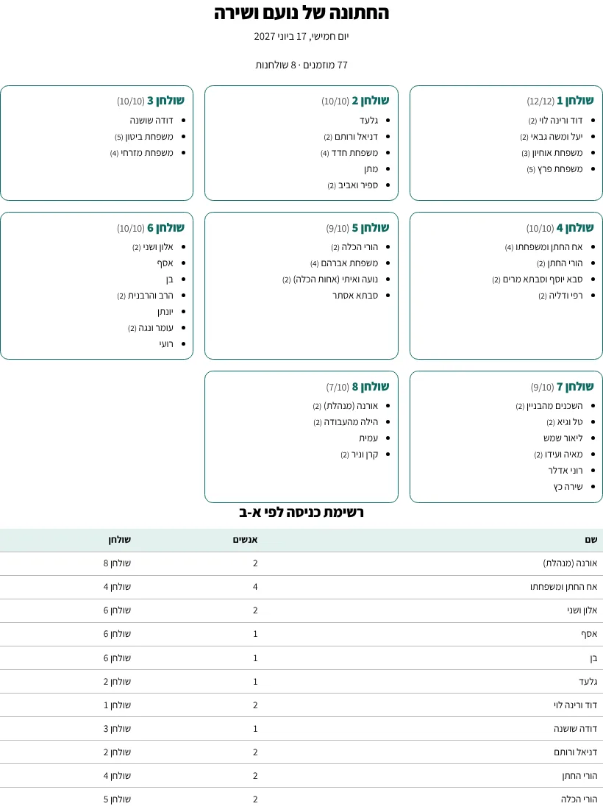
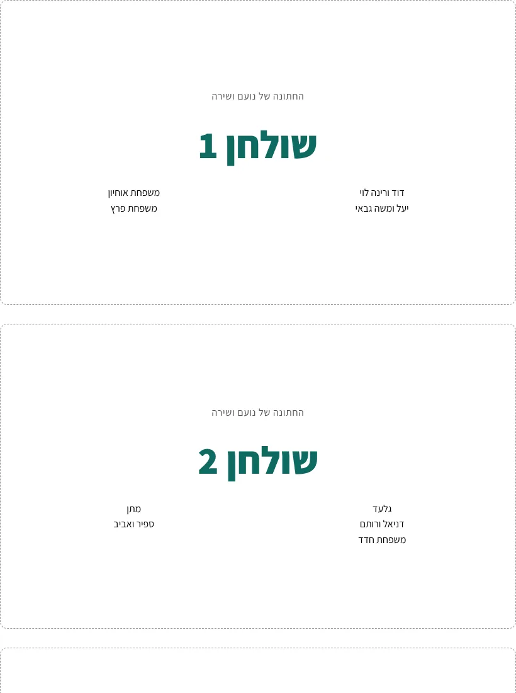
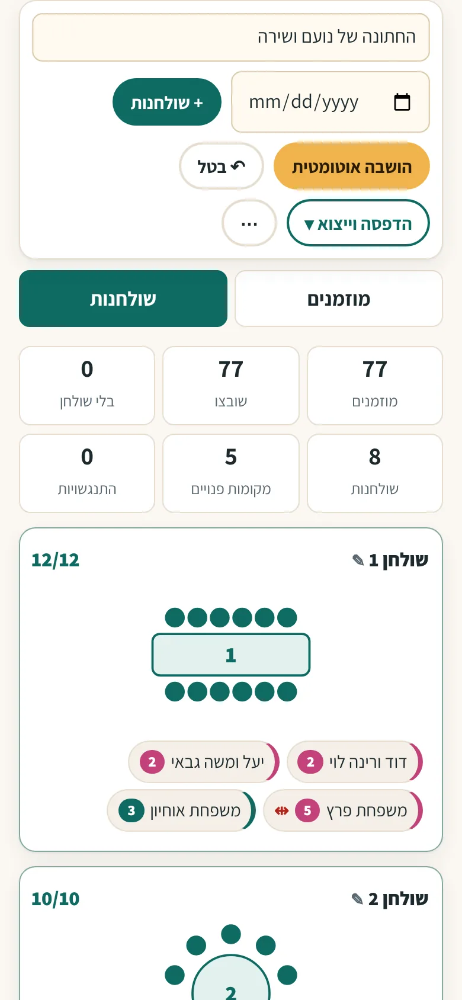

סידורי הושבה לחתונה: גוררים, מושיבים, מדפיסים
כלי אונליין בעברית שמסדר את ההושבה בשבילכם: מדביקים את רשימת המוזמנים, מוסיפים שולחנות, ולוחצים "הושבה אוטומטית". אחר כך מתקנים בגרירה. בלי הרשמה ובלי להוריד כלום.
פתחו את הכלי – חינםמה חינם ומה בתשלום?
- חינם לשימוש מלא במסך
- ייבוא מאקסל / CSV
- עובד בטלפון
- הנתונים נשארים אצלכם
אפשר לשלם גם מתוך הכלי, ברגע שתרצו לייצא. אחרי התשלום הייצוא נפתח מיד, בלי הרשמה.
מה מקבלים ב-₪29
- PDF נקי בלי סימן מים: מפת שולחנות + רשימת כניסה לפי א-ב לדלפק הכניסה
- ייצוא לאקסל: הושבה לפי שולחן, רשימת מוזמנים ושולחנות (לאולם ולמארחות)
- כרטיסי שולחן מוכנים להדפסה
- תשלום חד-פעמי, לכל האירועים שתתכננו בדפדפן הזה
- בחינם כבר עכשיו: שימוש מלא על המסך, הושבה אוטומטית ו-PDF עם סימן מים
למי זה מתאים
- חתונות ואירועים של 50 עד 600 מוזמנים
- מי שרוצה להושיב בגרירה ולראות מיד התנגשויות ("לא להושיב ליד…")
- מי שקיבל רשימה מאקסל או מכלי אישורי ההגעה ורוצה לסדר שולחנות מהר
ולמי פחות
- מי שצריך שרטוט של האולם בקנה מידה: הכלי מסדר שולחנות ושמות, לא מיקום פיזי באולם
- עבודה משותפת בזמן אמת מכמה טלפונים: הנתונים נשמרים בדפדפן אחד (מעבירים עם קובץ גיבוי)
נסו בחינם

דוגמת סידור הושבה (PDF)
PDF נקי כמו שיוצא מהגרסה המלאה: מפת שולחנות ורשימת כניסה לפי א-ב, עם 77 מוזמנים בדויים.
בלי תשלום, בלי מייל ובלי הרשמה.
ועוד יותר טוב מדוגמה: הכלי עצמו פתוח לשימוש חינם, ומשלמים ₪29 רק כשרוצים את הייצוא הנקי.
איך זה עובד
משתמשים בחינם
הכלי פתוח לכולם בדפדפן, בלי הרשמה. בודקים שהוא מתאים לכם.
פותחים את הגרסה המלאה
תשלום חד-פעמי ב-PayPal או בכרטיס, בתוך הכלי או בעמוד הזה.
מייצאים מיד
ההורדות הנקיות נפתחות מיד בדפדפן שבו שילמתם. מקבלים גם קישור לדף אישור.
ככה זה נראה
צילומי מסך מהכלי עצמו, עם נתוני דוגמה בדויים.





מה אפשר לעשות
ייבוא רשימה בשניות
הדבקה מאקסל או מ-Google Sheets, או ייבוא קובץ CSV / XLSX. שורה לכל הזמנה, עם מספר אנשים, צד וקבוצה.
שולחנות עגולים ומלבניים
כל שולחן עם מספר מקומות משלו, ציור של המקומות התפוסים ושם חופשי (שולחן אבירים, משפחה, ילדים).
גרירה ושחרור
גוררים הזמנה לשולחן, או לוחצים עליה ובוחרים שולחן. בטלפון: לחיצה ארוכה ואז גרירה.
הושבה אוטומטית
מושיבה קבוצות יחד (חברים מהצבא, עבודה, משפחה), שומרת על צד ועל המקום בשולחן, ומשאירה לכם רק תיקונים.
התנגשויות וחריגות
סימון "לא להושיב יחד" בין שתי הזמנות, והתראה באדום על שולחן בחריגה או על בקשה שהופרה.
הדפסה, PDF ואקסל
מפת שולחנות ורשימת כניסה לפי א-ב לדלפק הקבלה, קובץ אקסל לאולם, וכרטיסי שולחן גדולים.
חינם מול גרסה מלאה
| מה | חינם | גרסה מלאה |
|---|---|---|
| שימוש מלא במסך: מוזמנים, שולחנות, גרירה | ✓ | ✓ |
| הושבה אוטומטית והתנגשויות | ✓ | ✓ |
| ייבוא מאקסל / CSV וגיבוי | ✓ | ✓ |
| הדפסה / PDF | עם סימן מים | נקי |
| ייצוא לאקסל (לאולם ולמארחות) | — | ✓ |
| כרטיסי שולחן להדפסה | — | ✓ |
| מחיר | ₪0 | ₪29 חד-פעמי |
כנות: הכלי רץ כולו בדפדפן שלכם, ולכן הנעילה של הייצוא היא פשוטה ולא "מוגנת". אם הכלי חסך לכם ערב של אקסל, הגרסה המלאה היא הדרך לתמוך בו.
איך זה עובד
מוסיפים מוזמנים ושולחנות
מדביקים רשימה או מייבאים קובץ, ובוחרים כמה שולחנות ומקומות.
מושיבים
"הושבה אוטומטית" ואז תיקונים בגרירה. הכל נשמר בדפדפן אוטומטית.
מדפיסים ושולחים לאולם
PDF עם סימן מים בחינם, או PDF נקי, אקסל וכרטיסי שולחן בגרסה המלאה.
שאלות נפוצות
זה באמת חינם?
כן. כל הכלי עובד בחינם במסך, בלי הגבלת מוזמנים או שולחנות, כולל הדפסה / PDF עם סימן מים. משלמים ₪29 פעם אחת רק אם רוצים PDF נקי, אקסל וכרטיסי שולחן.
איפה נשמרים הנתונים? מישהו רואה את רשימת המוזמנים?
הרשימה נשמרת רק בדפדפן במכשיר שלכם (localStorage) ולא נשלחת אלינו. כדי לעבור למחשב אחר או לשמור עותק, בתפריט ⋯ יש "שמירת גיבוי" ו"שחזור מגיבוי".
אפשר לעבוד מהטלפון?
כן. בטלפון יש לשונית מוזמנים ולשונית שולחנות. גוררים בלחיצה ארוכה, או לוחצים על שם ובוחרים שולחן מהרשימה.
מה קורה אחרי התשלום?
הייצוא הנקי נפתח מיד בדפדפן שבו שילמתם, בלי הרשמה ובלי מעבר לדף אחר. מקבלים גם קישור לדף אישור הזמנה: פתיחה שלו בדפדפן אחר פותחת שם את הגרסה המלאה.
איך מייבאים מאקסל?
שומרים את רשימת המוזמנים כקובץ XLSX או CSV, או פשוט מעתיקים את העמודות ומדביקים. הכלי מזהה כותרות כמו שם, כמות, צד, קבוצה ושולחן.
זה מתאים גם לבר מצווה או לאירוע חברה?
כן. הצדדים והקבוצות הם טקסט חופשי: אפשר לכתוב "משפחת אבא", "כיתה", "מחלקת מכירות" וכל מה שמתאים.
אפשר לקבל החזר?
זה מוצר דיגיטלי שנפתח מיד, ולכן כדאי לנסות את כל הכלי בחינם לפני הרכישה. פרטים במדיניות הביטולים. אם משהו לא עובד – כתבו לנו ונתקן.
מתכננים את כל החתונה?
מתכנן החתונה באקסל (₪49) מחבר תקציב, ספקים, תשלומים, אישורי הגעה ורישום צ'קים, ואת רשימת המוזמנים שלו אפשר להדביק ישר לכלי ההושבה. להזמנה עצמה: מעצב ההזמנות.
מדריכים
- רשימת מוזמנים ואישורי הגעה – ייבוא אנשי קשר, תזכורת בוואטסאפ בלחיצה והעברה להושבה. חינם עד 80 הזמנות
- מעצב ההזמנות – הזמנה לחתונה לוואטסאפ ולדפוס
כל הכלים והמדריכים לחתונה, לאורחים ולזוגות: הכל לחתונה ←